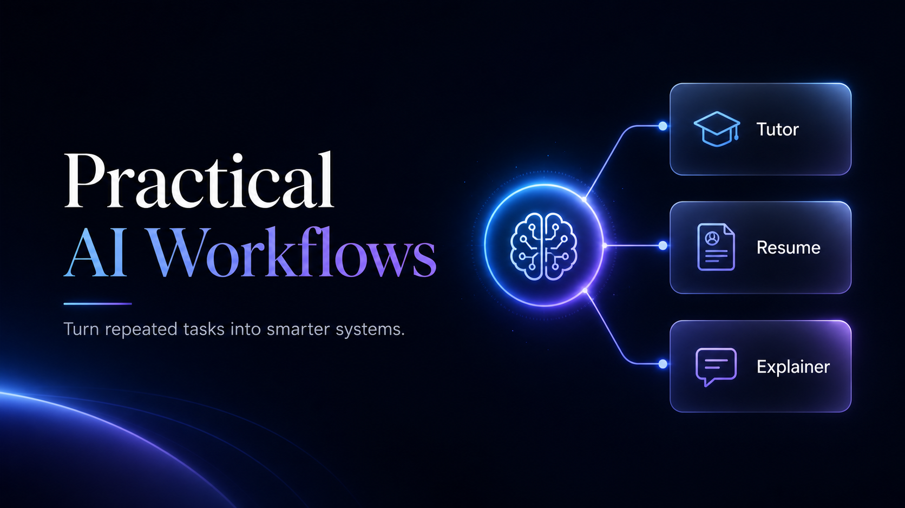
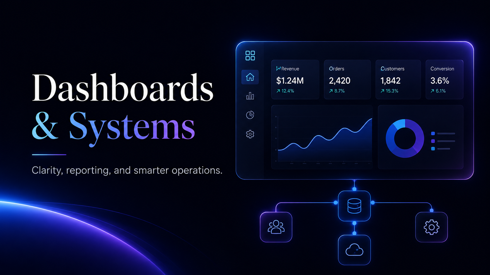

Teams Losing Time
Repeated tasks, manual updates, scattered information, and inconsistent processes are slowing people down.
Implement
I help teams identify practical AI opportunities, redesign workflows, set up automations, and build human-in-the-loop agents that support real business processes.

Who This Is For
Repeated tasks, manual updates, scattered information, and inconsistent processes are slowing people down.
You know AI matters, but you need help deciding where it should actually fit.
You want productivity gains without creating risk, confusion, or uncontrolled tool use.
Services

Identify where AI can save time, improve quality, and reduce repeated work.
Turn messy or repeated work into clearer, faster, more reliable systems.
Design focused assistants for research, reporting, onboarding, content, support, and knowledge.
Give your team clear rules, examples, and workflows for using AI correctly and responsibly.
Agent Positioning
Not every process needs an agent. Some need a better workflow, some need automation, and some need a human-in-the-loop assistant. I help you choose the right approach before building anything.
Best for simple repeated steps.
Best for connecting tools and reducing manual handoffs.
Best when a system needs to reason, use tools, follow instructions, and support multi-step work.
AI Implementation Audit
A practical audit that identifies your top AI, automation, workflow, and agent opportunities, then turns them into a clear roadmap. Starting at $2,500.